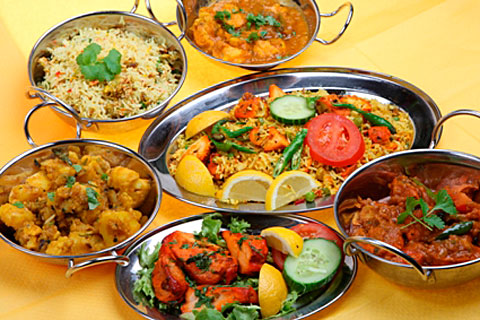

The development of these cuisines have been shaped by Hindu and Jain beliefs, and in particular by vegetarianism, which is a growing dietary trend in Indian society. There has also been Persian influence on North Indian cuisine from the years of Mughal and Delhi Sultanate rule.[2] Indian cuisine has been and is still evolving, as a result of the nation's cultural interactions with other societies.